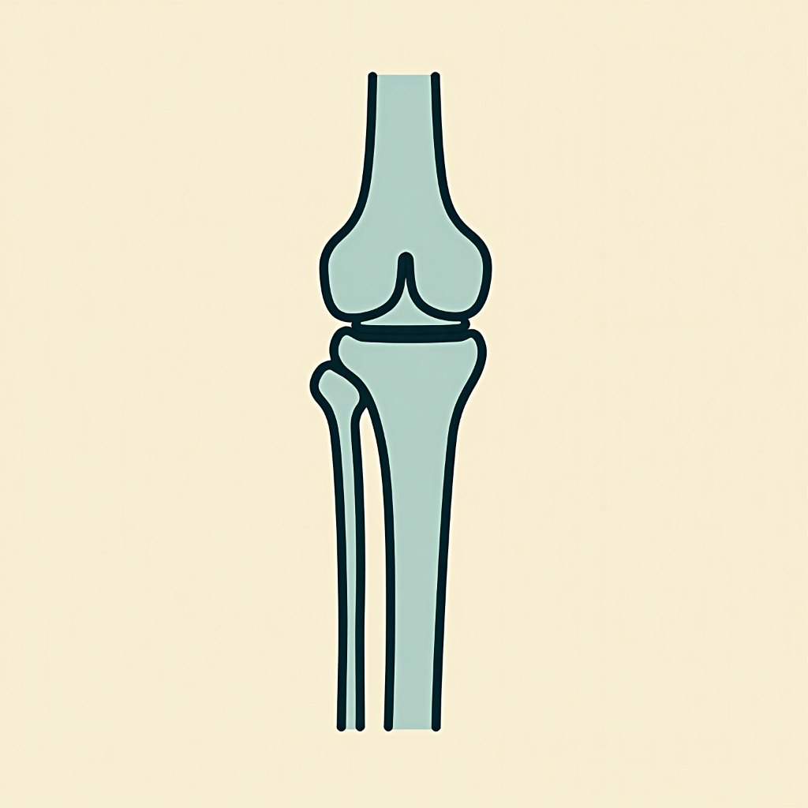

Cold Laser Therapy in Roseville
Cold laser therapy, also called low-level laser therapy, uses light at a power too low to heat or cut tissue. It is one of the treatment tools used in this Roseville office, chosen when the whole-body assessment says the tissue needs support rather than another adjustment.

When the only options left are stronger drugs or a referral
Persistent soft-tissue pain tends to follow a familiar route. A doctor's appointment, an X-ray or a scan, anti-inflammatories, a course of physical therapy, and then, when the pain outlasts all of it, a conversation about an injection or an orthopaedic referral.
That is a reasonable route and this practice does not argue with it. It works for a lot of people, and where it is what you need, take it. The gap it leaves is narrow but real: it offers very little between medication and a procedure. If you would rather not step up to an injection yet, and you have already run out of road on the tablets, there is a stretch in the middle where a drug-free treatment applied directly to the tissue is worth trying first.
What the light is actually doing
A cold laser is a hand-applied light source. It is non-thermal, which is the whole point of the word "cold": it does not burn, does not cut, and you generally feel nothing. The light is absorbed by the tissue underneath rather than reflected off the skin, and it is used to support the tissue's own recovery process. That is the honest description, and as far as this practice will take it.
What is unusual is not the laser itself. Plenty of clinics own one. It is that the laser sits behind an assessment. The applied-kinesiology examination decides whether the tissue in front of us is the right target at all, before anything is switched on. Locally that combination is rare: the clinics with instruments publish no applied-kinesiology capability, and the practice with the deepest applied-kinesiology credentials publishes no laser.
How it fits into a plan
Cold laser is almost never the whole plan. It is one entry in a stack that also holds the applied-kinesiology assessment, the chiropractic adjustment, FX-635 laser therapy, PEMF therapy, nutritional counselling, and hormone therapy management. Which of those you get, and in what order, comes out of the assessment rather than out of a package.
Sessions are short and repeat over a course. You are reassessed as you go, using the same tests that set your baseline, so the plan tracks what has actually changed. If the tissue is not responding, that is a reason to change the plan, not to sell you more of the same. Anything outside this scope gets referred on.
Cleared is not the same as proven
Laser devices are regulated, and clearance is granted device by device. The FX-635 unit in this office carries FDA clearances K190572 and K180197. Clearance means a device may be marketed for a named indication. It is not evidence it will work for you, and no efficacy percentage or trial figure appears anywhere on this site.
The Roseville practice that runs both halves
This is the Roseville practice that combines an applied-kinesiology assessment with an FDA-cleared device stack, for pain that has not responded to anything else. Both halves matter, and they matter in that order.
The assessment answers what to treat. The device stack answers what to treat it with. A clinic with instruments and no diagnostic method of its own has to guess which instrument to point at you; a practitioner with a method and no instruments can only offer their hands. Here, the same licensed practitioner does both, so the tool follows the finding instead of the finding following the tool. Links: how the FX-635 differs · PEMF therapy · the full treatment stack.
How to read the local offers
Other practices nearby lead with an introductory offer and a list of machines. This one leads with the assessment, and publishes no offer.
Common questions
Book an appointment, or call and ask whether a laser is the right tool for your case. Appointments are made directly with the clinic.